どんなゲーム？
ファンタジー・エンパイアは、1993年に SSI から発売された D&D 公式ライセンスの戦略ゲームです（開発は Silicon Knights）。舞台はミスタラの世界（ノウン・ワールド）。
プレイヤーは支配者となり、国を取り、城を建て、兵と英雄を育て、英雄を探索に送り出して魔法の品を集めながら、ほかの支配者と条約を結んだり裏切ったりして、ミスタラの統一を目指します。進行役はダンジョンマスター。戦いは、自分で指揮することも、自動で済ませることもできます。
Fantasy Empires
Steam 版「Fantasy Empires」を日本語で遊べるようにする、非公式のファンメイドパッチです。 メニューとキャラクター作成、国の情報、建物・兵・魔法の品・呪文、外交、メッセージ、支配者の人物紹介、シナリオの説明までを日本語にしています。 ダンジョンマスターが声で話すところには、日本語の字幕を出します。 ゲームの DOSBOX フォルダにファイルを 1 つ置くだけで日本語になり、消せば英語に戻ります。
ファンタジー・エンパイアは、1993年に SSI から発売された D&D 公式ライセンスの戦略ゲームです（開発は Silicon Knights）。舞台はミスタラの世界（ノウン・ワールド）。
プレイヤーは支配者となり、国を取り、城を建て、兵と英雄を育て、英雄を探索に送り出して魔法の品を集めながら、ほかの支配者と条約を結んだり裏切ったりして、ミスタラの統一を目指します。進行役はダンジョンマスター。戦いは、自分で指揮することも、自動で済ませることもできます。
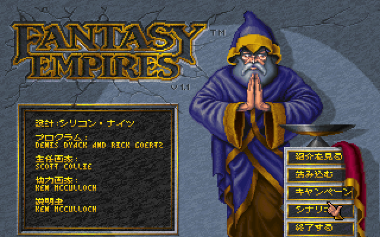
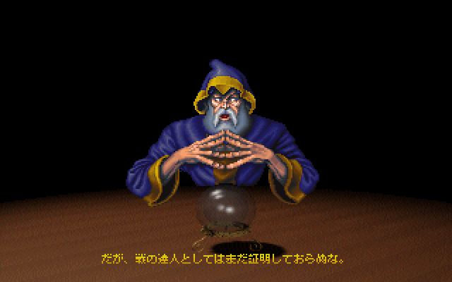
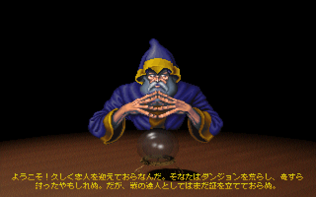
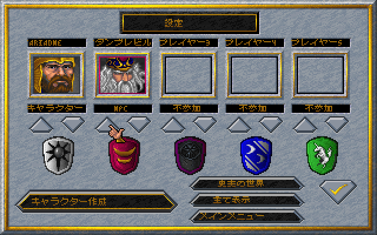
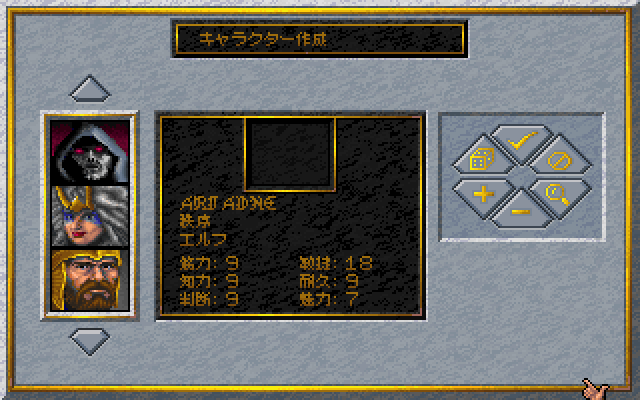
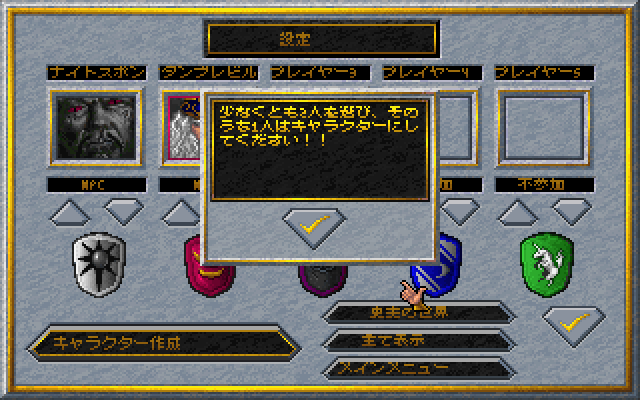
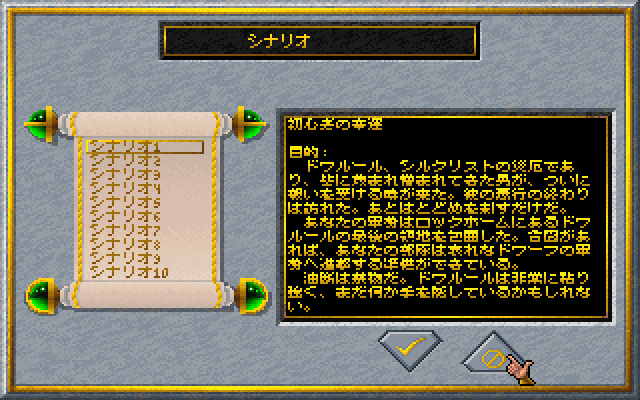
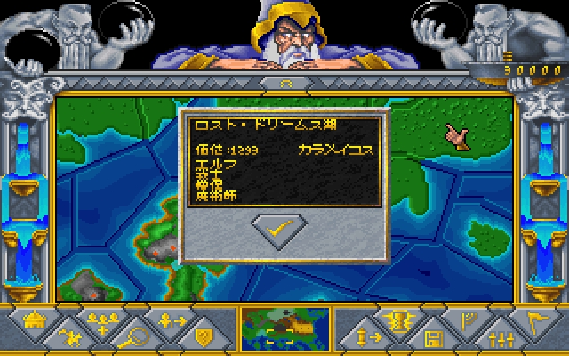
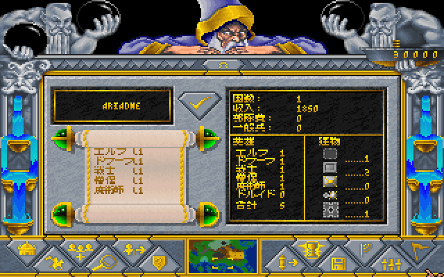
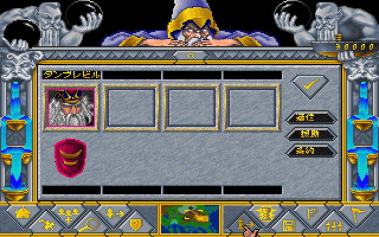
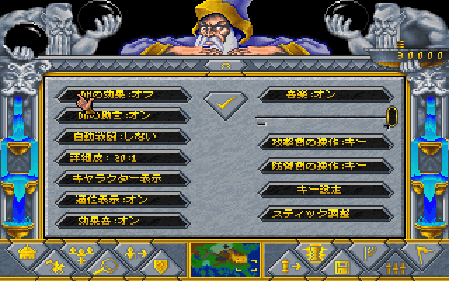
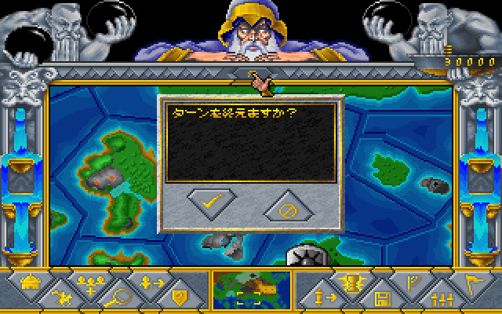
FantasyEmpires_JP.zip を展開します。winmm.dll を、ゲームの DOSBOX フォルダ（DOSBox.exe があるフォルダ）にコピーします。games\Fantasy Empires - ENG\DOSBOX に進みます。GOG 版の DOSBox（0.74-2.1）と、ふつうの DOSBox 0.74-3 にも合わせてあります。GOG 版でも、ゲームを入れたフォルダの中の DOSBOX フォルダに winmm.dll を置いてください（GOG 版の DOSBox 0.74-2.1 で日本語になることは確かめましたが、GOG 版のゲームそのものでの動作はまだ確かめていません）。
ゲームのファイルは書き換えません。日本語化に使うファイル（EXE に手を入れたコピー）は、起動時に %LOCALAPPDATA%\FE_JP フォルダに作られます。
DOSBOX フォルダの winmm.dll を消すと英語に戻ります。%LOCALAPPDATA%\FE_JP フォルダも消してかまいません。セーブデータと作ったキャラクターはそのまま使えます。誤訳や不自然な訳に気づいたら、GitHub の Issues で教えてください。